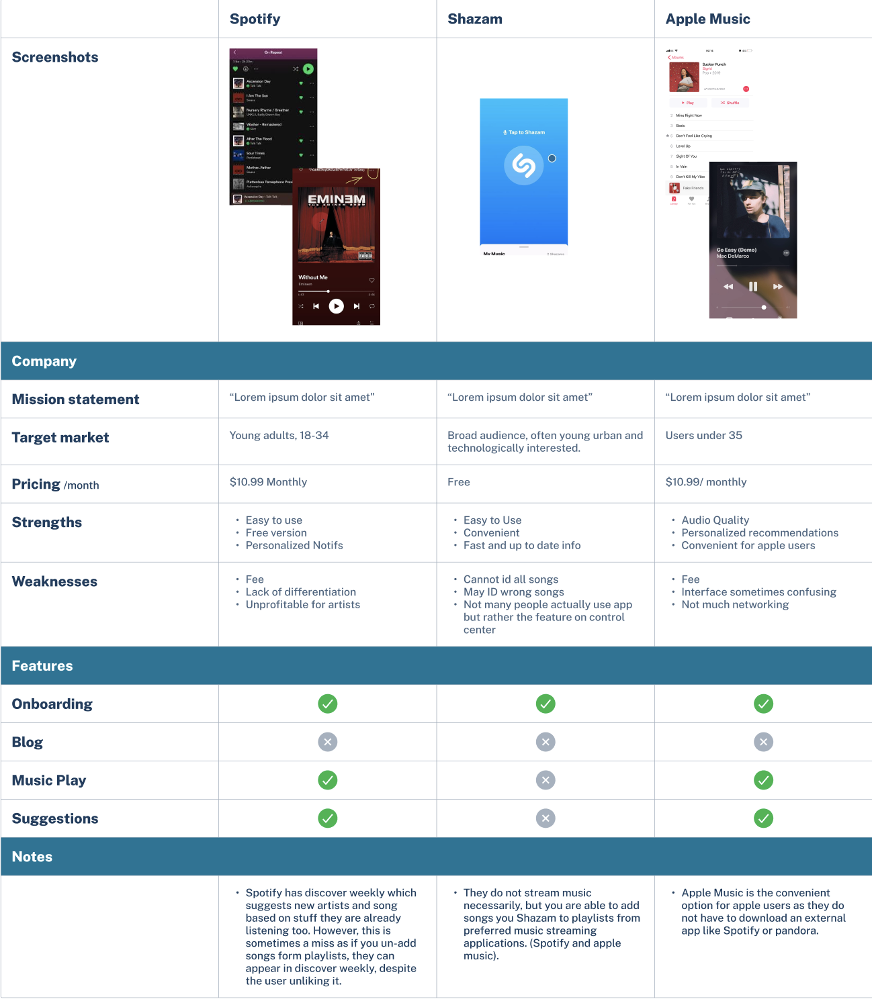
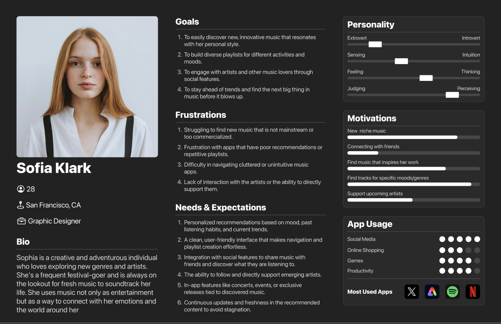

Process
User Research & Insights
Mapped core tasks like browse, search, and queue, then iterated quick wireframes to validate layout and control placement.
User Interview

Competitor Analysis
Personas
To guide the design of Sonar, I developed a few personas to represent potential users of the app. These personas helped me stay focused on user motivations and frustrations throughout the design process.
Persona Poster 1

Persona Poster 2
Design Goals
From the research insights, I set 3 clear design goals:
- 1: Make music discovery fun and engaging.
- 2: Use a familiar interaction pattern (swiping) to reduce learning time.
- 3: Keep the interface clean and intuitive to avoid clutter.
Low-Fidelity Wireframe
I sketched out low-fidelity wireframe to explore how a swipe-based flow could be applied to music discovery. These wireframe helped me visualize navigation patterns and experiment with where to place key features like song previews and save options.
High‑Fidelity Wireframe
Using the wireframes as a foundation, I built high-fidelity prototypes to bring the interface to life. The focus was on designing a minimal, visually appealing UI that supported fast navigation and music previews.